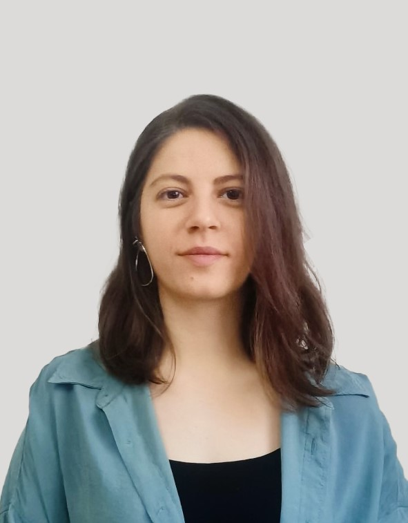

Home
My Profile

HELLO EVERYBODY, I AM
Zeynep Seckinli
Java Software Developer
While working at Turk Telekom, I decided to shift my focus towards the field of software development. Over the course of 4 years in the business world, I aim to combine the communication, problem-solving, teamwork, and analytical thinking skills I acquired with my knowledge in software. My goal is to become a global-level software developer by integrating these skills with my expertise in the software domain.
- 10th Jan, 1996
- zeyneppseckinli@gmail.com
- Istanbul, Turkey